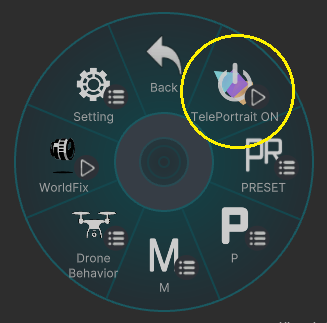
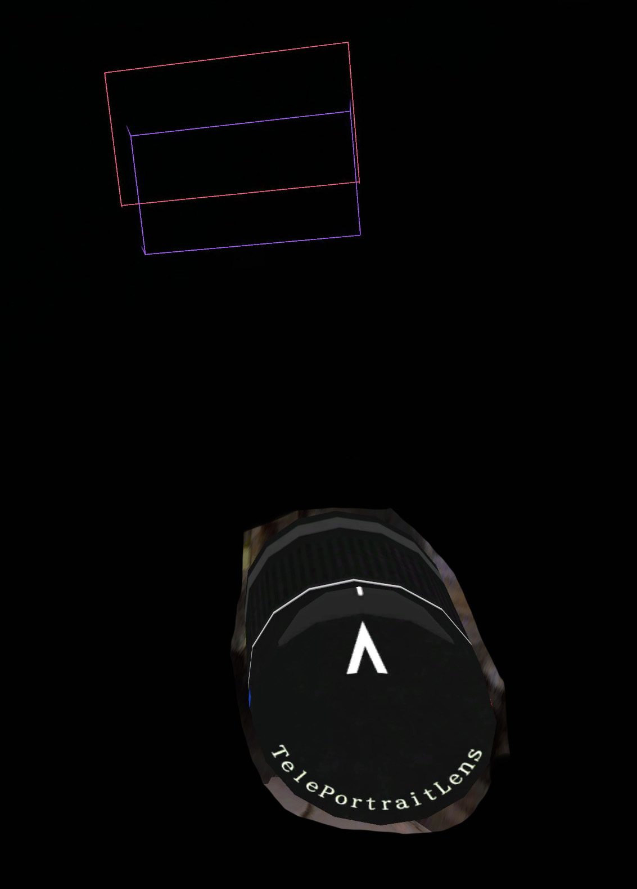

How to Use
使い方
VRCハンドカメラを出し、
エクスプレッションメニューから[TelePortraitLens]を選択
[TelePortrait ON]を選択すると、レンズが起動します。

レンズを起動させるとカメラのオブジェクトと
カメラオブジェクトの視線の先に2つの四角い枠が表示されます。
このカメラと枠は、自分自身からしか見ることができません。

レンズ位置の調節
[Setting]-[Lens Transform Adjust]で
レンズの位置と角度を調節できます。
自身の撮影スタイルに合わせて調節をしてください。
基本的な仕様
レンズを起動させるとVRCハンドカメラ上の画面が
TelePortraitLensの画面になります。
Tele Portrait Lensは３つのカメラを使用しています。
前景（Fore）・メイン・背景（Back）の3つを同時に撮影し
それを合成しています。
表示されている四角い枠組みの中がメインカメラの撮影範囲になります。
基本的には枠組みの手前側がForeの撮影範囲 、奥側がBackの撮影範囲になります。
ForeとBackの撮影範囲についてはボケが発生します。
つまり撮影したい対象を枠で挟んで撮るのが基本となります。
基本的な撮り方
-
カメラを起動したら、[P]-[Focus Range]を選択
被写体との距離に近い数値を選ぶ。 -
[P]-[Focus]を選択すると、上下左右の4方向に入力できるパッドが表示されます。
上下ボタンで被写体にメインカメラの撮影範囲を合わせる。
左右で、フォーカス範囲を広げることが可能です。(⇐:範囲拡大 / ⇒:範囲縮小) -
[P]-[FOV]で画角を調整しましょう。
-
[P]-[Bokeh]の各数値を変更して、ボケの強さを決めます。
-
Optional:[M]-[各カメラ]-[Color Correction]でカメラの色調補正などができます。
メインに映っている被写体だけを明るくしたり
逆に背景を暗くしたりして、被写体を目立たせることも可能です。 -
設定をリセットしたい場合には[Preset]の各種[Reset]を活用してください。
押し間違い防止のために、[Lens]と[Fix&Level]のResetボタンは
長押しで実行されます。